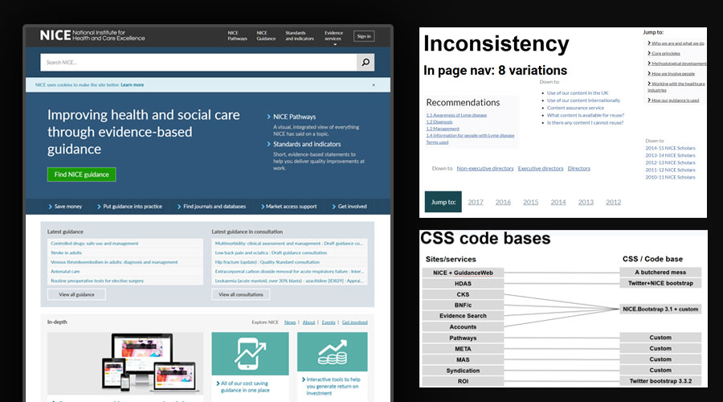
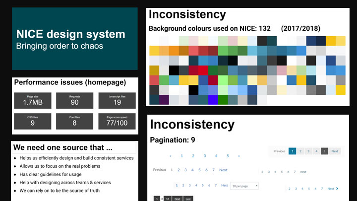
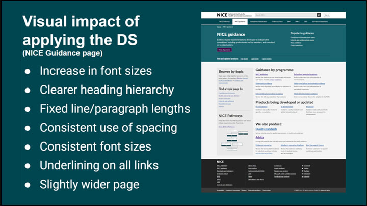
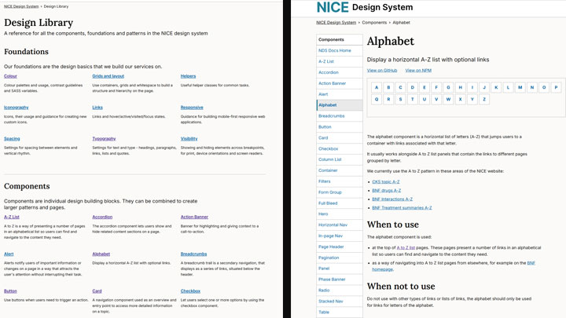
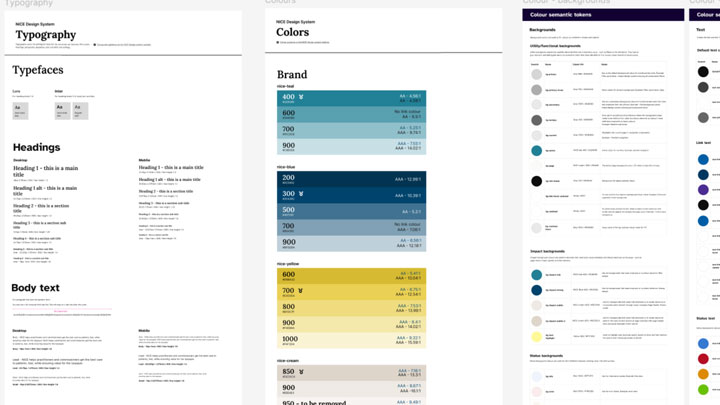

The Challenge
As the UK's primary source for healthcare guidance with over 2.5 million users per month, NICE manages a complex ecosystem of over 30 separate applications and services. There was a reliance on a generic Bootstrap implementation that had created significant technical debt, bloated codebases, and a failure to meet modern accessibility standards.
A lack of clear guidelines and consistent updates had eroded internal trust, while excessive file sizes — driven by redundant CSS, JS, and fonts — led to poor performance and slow loading times. The current framework was not built for scale and lacked the necessary standards and governance to support a modern digital public service.


My Role
Using my experience and cross-team insights, I built a strategic business case and secured a budget by demonstrating the clear ROI of a modernised design system. I conducted the development of our initial content guidelines, foundations, and core component UI library.
To drive adoption, I led an internal promotion campaign to showcase the system's practical applications within individual teams. I also defined our long-term vision and strategy for a unified digital future.

The Approach
I'd seen previous attempts to launch a design system stall because they stayed as abstract ideas for too long, never quite connecting with our broader strategic goals. I recognised that to get real buy-in, we needed more than a static pitch deck — we needed something tangible. A working model that highlighted impact, value, and mapped back to what the organisation was trying to achieve.
To make it happen, I collaborated with our lead developer to build a working MVP in the gaps between daily delivery tasks. We did horizon scanning against industry gold standards like GOV.UK and the NHS, but adapted to solve our specific challenges — particularly around complex, long-form layered content.
"People wanted a single source of truth they could trust, with clear guidance so they didn't have to second-guess every decision."
Our internal research confirmed that teams were wasting far too much time solving the same basic design problems over and over. A large part of my time was spent speaking to teams around content hierarchy, structure, and identifying the most important elements needed to support their roles. Once we had the right model, it was used to build prototypes and form the foundations to scale the design system — ensuring everything published was backed by evidence from our own research or established public sector organisations, so teams had confidence in what they were using.

Outcome & Impact
The NICE Design System is now the foundational framework for building and maintaining digital services at NICE. Powering 30+ products, it ensures a cohesive, accessible experience for all users and serves as the definitive source of truth for both internal teams and external agency partners.
As the lead for the NICE Design System, I've moved the project from its initial setup to a mature, high-impact service that aligns our design vision with organisational goals. By leading the migration from Adobe XD and Axure to a centralised Figma library, I've created a single source of truth that simplifies how our teams work. My role now focuses on bridging the gap between design and delivery — managing the roadmap with cross-functional stakeholders and driving adoption through monthly show-and-tells.
- 13% efficiency gain — by benchmarking standard tasks against legacy workflows, we calculated a 13% reduction in redundant design and development effort across an average project timeline
- 32% faster load times — optimised code architecture within the system led to an average 32% increase in load speeds, significantly enhancing the experience for long-form content users
- Accessibility by default — every component audited from inception, ensuring all products built with the system meet WCAG 2.2 standards
- Unified design language — implemented Design Tokens to bridge the gap between Figma and the codebase, eliminating translation errors and ensuring 1:1 visual consistency

Reflection
The complexity of legacy systems significantly impacted our rollout timeline. With different teams operating on different backend systems, and existing infrastructure unable to support new components without rebuilding, the pace of adoption was much slower than anticipated. What felt like a straightforward design system rollout quickly became a much larger technical undertaking. In future projects, I'd map backend constraints much earlier — before committing to timelines — so the plan is realistic from the start.
Getting senior stakeholder buy-in took longer than it should have. Without leadership aligned early, momentum stalled at key decision points, which had a knock-on effect on rollout across teams. Next time, I'd involve developers much earlier in the design process — not just to pressure-test feasibility, but because having technical voices in the room earlier builds a stronger, more credible case when presenting to leadership.